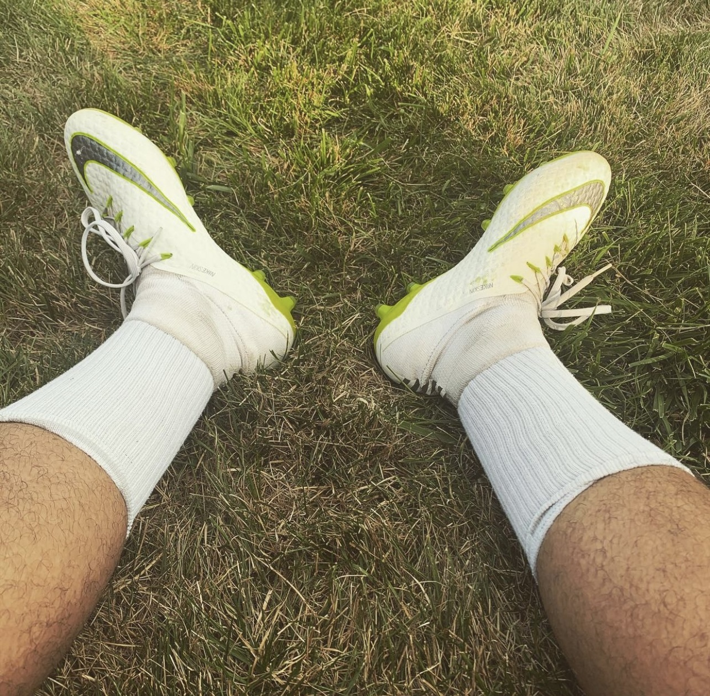

My love for football!
Football, basically called soccer in the US! I am a lover of football, i've always been a strong supporter of Manchester United football club ever since i was 6 years old. I also love playing football, i played for a teenage team during my days as a teenager and up until now i am in my 20s i still play for a team. Football is an interesting sport with a great history!
